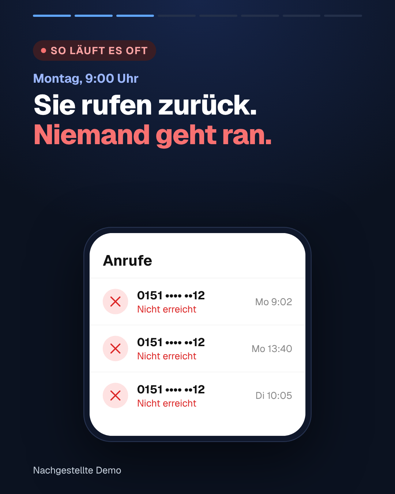
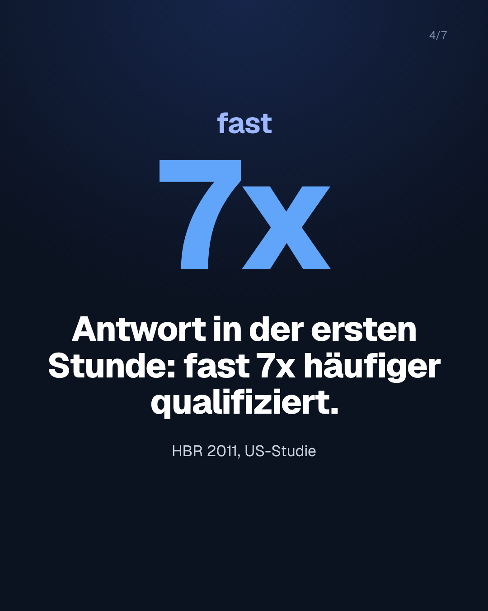
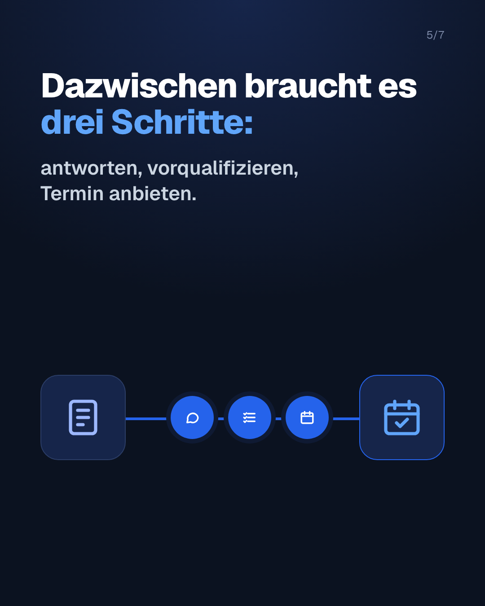
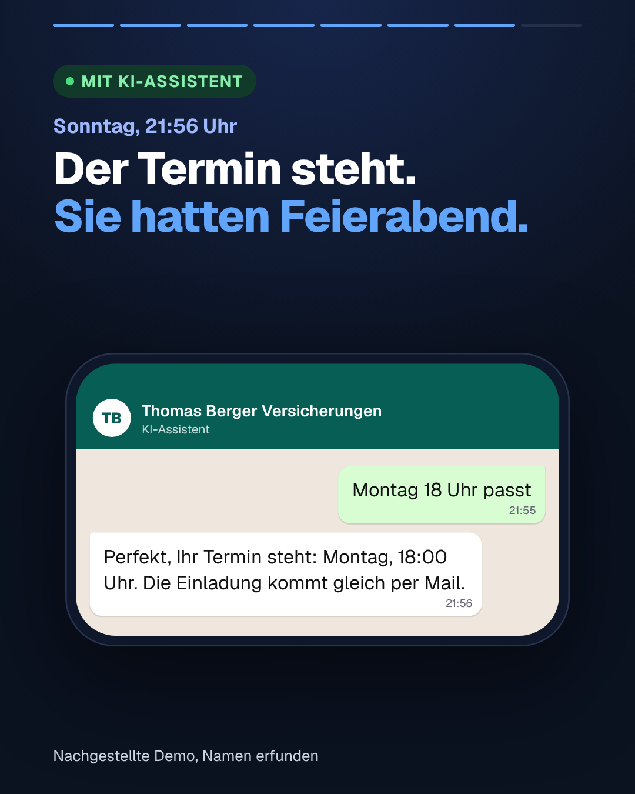
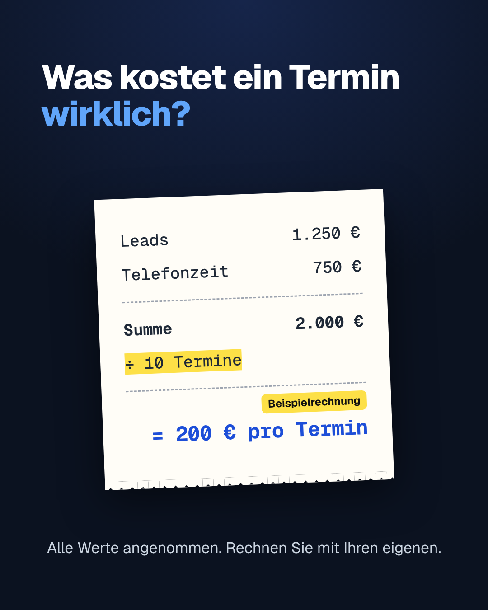

Jeder Post ist durch drei Prüfrunden gegangen: skeptischer Vermittler, LinkedIn-Stratege, Recht und Marke. In Runde 1 lagen die Noten bei 6,1 bis 7,9. Die Schwelle ist 9 im Schnitt und nirgends unter 8.
Tippe auf „… mehr anzeigen“, um den ganzen Text zu lesen. Die Reihenfolge entspricht dem Plan.
Ole KannapinnGründer performancegrowth · Neukunden für Versicherungsvermittler
Über 200.000 Leads im Versicherungsbereich.
Und ich habe lange das Falsche gezählt.
So viele Anfragen haben wir seit 2019 erzeugt, zusammengezählt über alle Kampagnen. Eine große Zahl. Sie sagt nur nichts darüber, wie viele Gespräche daraus geworden sind.
Ich mache seit 2014 Online-Marketing. Mein Gedanke war: Wenn die Anzeige gut ist und der Leadpreis stimmt, läuft der Rest von allein.
Tut er nicht.
Ein Lead war für mich fertig, sobald er beim Vermittler ankam. Was danach passierte, habe ich zu selten gefragt. Das war mein Fehler.
Was Vermittler über gekaufte Leads erzählen, kennen Sie: mehrfach verkauft, nie erreicht, am Ende Storno. Und selbst gute Anfragen bleiben liegen, weil niemand sonntags um 21 Uhr am Telefon sitzt.
Ich verstehe jeden, der beim Wort Lead die Augen verdreht.
Deshalb verkaufen wir Vermittlern keine Rohleads mehr. Unser Ziel ist der Termin, nicht die Adresse.
Die Werbung läuft in Ihrem Namen.
Jede Anfrage geht nur an Sie. Sie wird nicht weiterverkauft.
Ein KI-Assistent meldet sich per WhatsApp, in der Regel in unter einer Minute. Er fragt nach dem Bedarf und bietet Termine aus Ihrem Kalender an.
In unserer nachgestellten Demo steht der Termin 9 Minuten nach dem Formular.
Die Beratung bleibt bei Ihnen.
Was ärgert Sie an gekauften Leads am meisten?
Mehrfach verkauft, nie erreicht oder am Ende Storno?
#Versicherungsvermittler #Neukundengewinnung
Foto von Olefrontal im Büro, natürliches Licht, 4:5. Kommt von dir.
OK
Ole KannapinnErster Kommentar
Kurz zu mir: Ich bin seit 2014 im Online-Marketing und seit 2019 im Versicherungsbereich. In den nächsten Wochen zeige ich hier offen, wie unser Ablauf funktioniert, auch die Stellen, an denen es nicht glattläuft. Wenn Sie ein Thema dazu haben, schreiben Sie es gern drunter.
2. Mi 02.12. · 7:45 UhrKarussell
OK
Ole KannapinnGründer performancegrowth · Neukunden für Versicherungsvermittler
„Nicht erreichbar trotz mehrfacher Anrufversuche.“
Kennen Sie den Satz aus Reklamationen?
Manche Leads sind schlicht schlecht. Falsche Nummer, mehrfach verkauft. Gegen Mehrfachverkauf hilft nur, dass jede Anfrage bei genau einem Vermittler landet.
Aber ich habe auch viele gute Anfragen scheitern sehen. Meiner Erfahrung nach selten am Formular. Meistens an den Stunden danach.
Im Karussell erzähle ich denselben Sonntagabend zweimal.
Einmal so, wie er oft läuft.
Einmal mit den drei Schritten, die zwischen Formular und Termin passieren müssen.
Was ist bei Ihnen der häufigste Grund, warum aus einem Lead kein Gespräch wird?
Nicht erreicht, mehrfach verkauft oder schon woanders abgeschlossen?
#Versicherungsvermittler #Versicherungsmakler




1 / 7
OK
Ole KannapinnErster Kommentar
Quelle zu Folie 4: Oldroyd, McElheran, Elkington, „The Short Life of Online Sales Leads“, Harvard Business Review, März 2011. Untersucht wurden Web-Anfragen bei über 2.000 US-Unternehmen. Verglichen wurden Unternehmen, die sich innerhalb einer Stunde meldeten, mit Unternehmen, die sich erst eine Stunde später meldeten. Wer die drei Schritte einmal live sehen will: performancegrowth.de/termin
3. Do 03.12. · 17:30 UhrVideo
OK
Ole KannapinnGründer performancegrowth · Neukunden für Versicherungsvermittler
Ihr Büro ist zu.
Die Anfrage kommt trotzdem.
Was passiert mit ihr bis Montag?
In vielen Büros erst einmal nichts. Verständlich, es ist Sonntagabend. Nur ist die Anfrage am Montagmorgen dann oft schon kalt.
Im Video erkläre ich, was in dieser Zeit stattdessen passieren kann. Daneben läuft ein nachgestellter Chat mit erfundenen Namen.
21:47 Uhr kommt eine Anfrage für eine Katzenversicherung rein.
Noch in derselben Minute schreibt der KI-Assistent per WhatsApp. Im Namen des Vermittlers, mit Texten, die er vorher freigegeben hat.
Zwei kurze Fragen. Zwei Terminvorschläge.
21:56 Uhr steht der Termin.
Der Vermittler hatte Feierabend und hat davon nichts mitbekommen.
Am Montag weiß er schon: Die Kundin will Vollschutz, beim Tierarzt waren es letztes Jahr 900 €.
Er telefoniert nicht hinterher. Er bereitet sich vor.
Die Katze ist nur das Beispiel. Bei Hausrat oder Wohngebäude läuft der Ablauf genauso.
Ehrliche Frage: Wann rufen Sie eine Anfrage von Sonntagabend heute zurück?
Montag früh, Montag irgendwann oder wenn es passt?
#Versicherungsvermittler #Versicherungsmakler #Neukundengewinnung
OK
Ole KannapinnErster Kommentar
Wer sehen möchte, wie das mit Ihren eigenen Produkten und Ihrem Kalender aussähe: Im Erstgespräch zeige ich Ihnen den Ablauf live in der Demo-Umgebung. performancegrowth.de/termin
4. Di 08.12. · 7:45 UhrRechnung
OK
Ole KannapinnGründer performancegrowth · Neukunden für Versicherungsvermittler
Ihr Leadpreis ist nicht Ihr Preis.
Was kostet Sie ein Termin wirklich?
Beispiel: 25 € pro Lead, 200 € pro Termin.
Alle Werte sind angenommen, es sind keine Ergebnisse von uns oder von Kunden. Den Leadpreis habe ich bewusst günstig angesetzt. Setzen Sie Ihre eigenen Zahlen ein:
50 Leads zu je 25 € = 1.250 €
Je Lead 15 Minuten für Anrufe, Mailbox, Notiz, Nachfassen = 12,5 Stunden
12,5 Stunden zu je 60 € = 750 €
Zusammen 2.000 €. Daraus werden 10 Termine.
Macht 200 € pro Termin. 40 von 50 Anfragen haben Sie bezahlt, ohne dass ein Termin daraus wurde.
Jetzt zwei Stellschrauben, beide um 20 %:
Leadpreis 20 statt 25 €: 175 € pro Termin.
12 statt 10 Termine aus denselben 50 Anfragen: rund 167 € pro Termin.
Gleich großer Schritt, und die Quote bewegt mehr. Bei 15 statt 10 Terminen wären es rund 133 €.
Und die Quote entscheidet sich oft in den Stunden nach dem Formular.
Bei uns übernimmt den ersten Kontakt ein KI-Assistent per WhatsApp, in der Regel in unter einer Minute. Er fragt vor und bietet Termine aus Ihrem Kalender an.
In unserer nachgestellten Demo aus dem Video vom 3. Dezember stand der Termin 9 Minuten nach der Anfrage.
Ob das bei Ihnen zu mehr Terminen führt, kann ich nicht versprechen. Ich kann es mit Ihnen durchrechnen.
Welche Annahme ist bei Ihnen anders?
Mehr Zeit je Lead, ein anderer Stundensatz, mehr oder weniger Termine?
Schreiben Sie Ihre Werte gern drunter, ich rechne mit.
#Versicherungsvermittler #Versicherungsmakler

OK
Ole KannapinnErster Kommentar
Wenn Sie die Rechnung lieber nicht öffentlich mit Ihren echten Zahlen durchgehen wollen: Das machen wir im Erstgespräch gemeinsam. Dort sage ich Ihnen auch, was ein Termin bei uns kostet, mit Zahl. performancegrowth.de/termin
Was du vor dem Posten bestätigen musst
Antwortzeit„In der Regel in unter einer Minute“ braucht eine Auswertung echter Antwortzeiten über etwa 90 Tage.
Exklusivität und keine RohleadsStimmt ohne Ausnahme, auch über die Lieferantenrolle?
200.000 LeadsSeit 2019 oder 2020, über alle Kampagnen zusammengezählt?
Freigabe der Bot-TexteGibt der Vermittler die Texte des Assistenten vorher frei? (Post 1)
Preis im ErstgesprächNennst du im Erstgespräch einen Preis pro Termin? (Post 3)